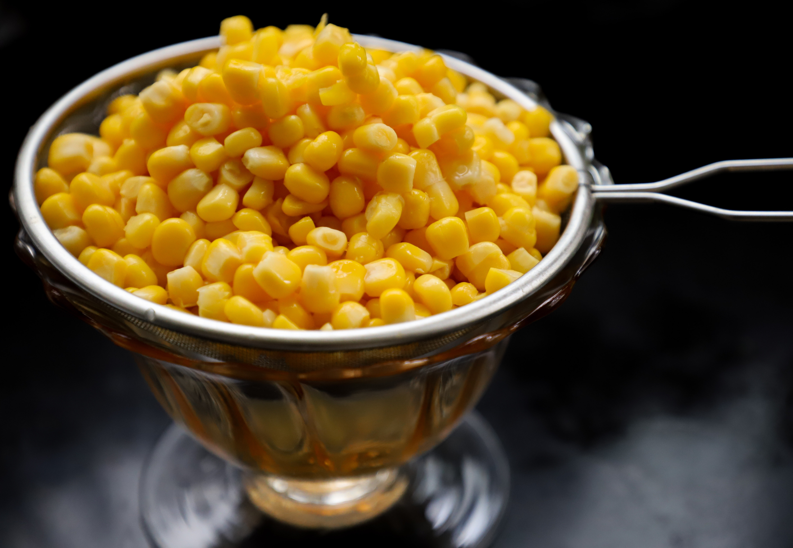
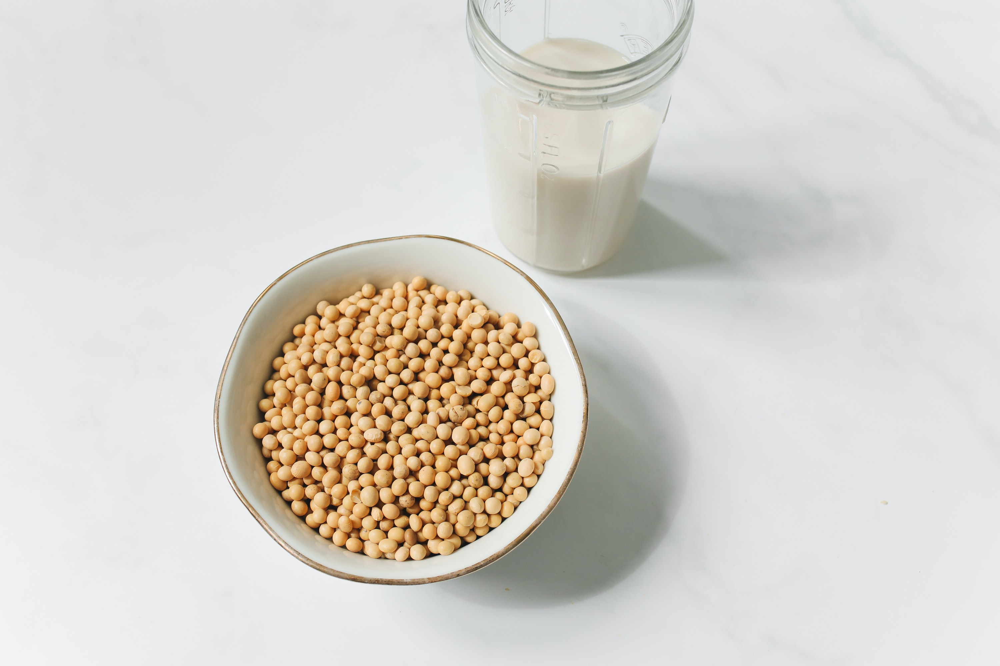

Rice
Rice is grown in rain-fed areas with hot and humid climates, especially the eastern and southern parts of India.
Learn More

Maize
Maize is one of the most versatile emerging crops having wider adaptability under varied agro-climatic conditions.
Learn More
Cotton
Cotton is a soft, fluffy staple fiber that grows in a boll, or protective case, around the seeds of the cotton plants.
Learn More

Soya-Bean
The soybean, soy bean, or soya bean is a species of legume native to East Asia, widely grown for its edible bean, which has numerous uses.
Learn More